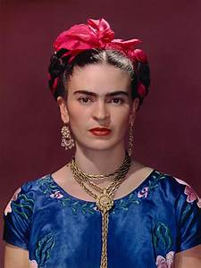
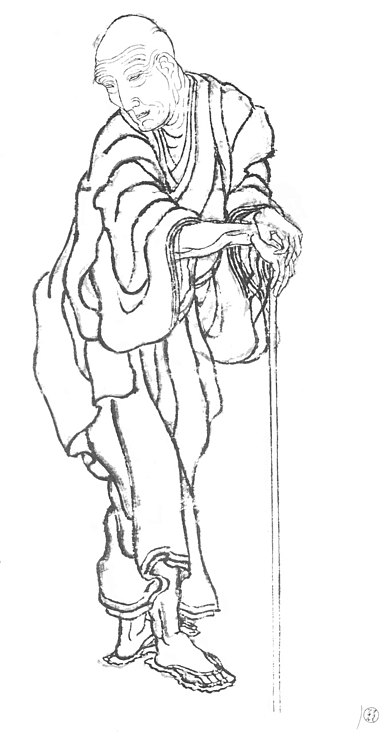

Pablo Picasso est un peintre du XXème siècle principalement
connue pour ses peintures et comme le fondateur du cubisme,
il fut également sculpteur, et l'un des artistes les plus important de son siècle.
Frida Kahlo est une artiste peintre et l'une des plus grandes figures de l'art mexicain du XXe siècle. Elle fut l'autrice de plus d'une centaine de tableau, et est trés reconnu pour ses peintures réalistes. Atteinte d'une maladie infexieuse c'est suite a un accident qui la touchera a la colonnevertebrale qu'elle commencera a peindre réguliérement durant sa convalescence.
| Dates | Evénements |
|---|---|
| 1925 | Accident de bus qui causera sa blessure a la colone vertebrale |
| 1928 | Rencontre avec Diego Rivera qui deviendra on mari |
| 1938 | Rencontre avec André Breton qui lui permettra d'éxposé ces oeuvres dans une galerie de Neuw-York. |
| 13 juillet 1954 | Meurt après une amputation de la jambe droite |

Victor Vasarely est un artiste, d'abord née en hongrie
puis venu à Paris, du XXème siècle, en 65 il va se consacrer
à l'art optique apreès avoir eu une période dans l'art abstrait
géométrique. Il se concentre sur la déformation des lignes et
les illusions d'optique.
Katsushika Hokusai, connu plus simplement comme Hokusai dont le surnom fut "Vieux Fou de dessin" soit Gakyōjin, était un peintre, dessinateur, graveur et auteur japonais du XVIIIème siècle. 
Sources :
frida khalo vasarely Picasso hokusai